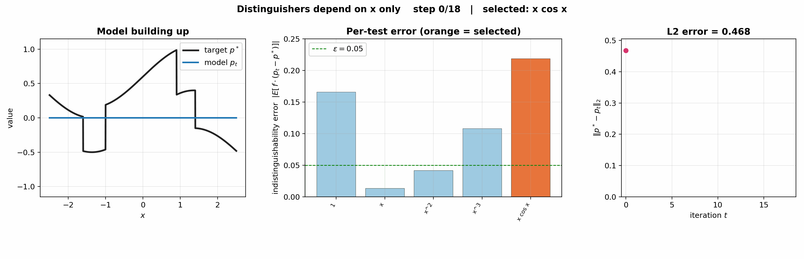

The BOOST procedure with ε = 0.05 and the class of tests ℱ = {1, x, x², x³, x cos x}, each depending only on x and normalized to unit norm. At each step the orange bar is the test selected for the update (the largest violator); the procedure halts when every test is inside the ±ε band.

The model is forced into the span of five smooth functions, so it cannot capture the sharp jumps in p*. Note that while the squared distance to the target decreases monotonically, the per-test errors do not: an update along one test can push another test's error back up. The distance decreases and then plateaus near 0.28 — the best this class can do. The companion animation runs the same procedure with a class that also contains tests of the model's output p(x), and reaches a lower distance.